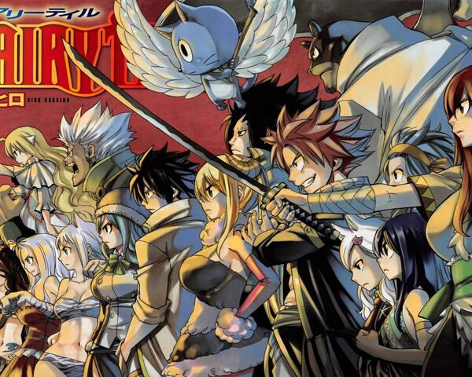

캐릭터소개
페어리 테일의 등장인물을 정리하는 문서. 각 길드원들은 길드 항목 내 서술한다. 사실 만화가 만화다 보니 등장인물이 엄청나게 많아서 문서를 따로 만들었다.

페어리테일 주인공들


만화클래스과정 (덕후들)
전투하는 장소가 황량한 허허벌판이나 알 수 없는 장소가 아니라 어느 곳인지 확실히 알 수 있는 곳으로 나오는 경우가 많고 그 장소가 단순한 병풍이 아닌 스토리의 중요요인으로 나오는 경우가 많다.
만화클래스과정 (덕후들)
전투하는 장소가 황량한 허허벌판이나 알 수 없는 장소가 아니라 어느 곳인지 확실히 알 수 있는 곳으로 나오는 경우가 많고 그 장소가 단순한 병풍이 아닌 스토리의 중요요인으로 나오는 경우가 많다.